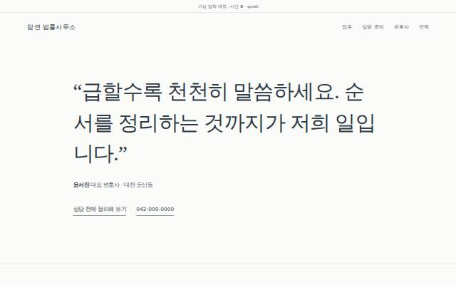
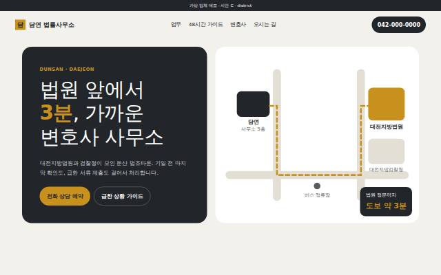

A · docket 추천 · 초대형 타이포
초대형 명조 타이포와 사건번호 같은 라벨, 흐르는 업무 띠. 민사·형사·재판이혼의 단계를 누르면 단계별로 일어나는 일과 준비할 것을 보여 주는 사건 흐름 타임라인이 시그니처.
| layout | typographic |
|---|---|
| hero | ticker |
| typePair | Song Myung + Gothic A1 |
| palette | oxblood·cream·ink |
| signature | 사건 흐름 타임라인 |
가상 업체 "담연 법률사무소"(대전 둔산동) 시안입니다. 기존 pro 업종 완성 사이트(trust: swiss-grid·split-media, almanac: editorial·statement)와도, 서로 간에도 레이아웃·히어로·서체·색이 모두 다릅니다. 추천: 시안 A · docket — 불안한 의뢰인에게 "지금 어디쯤인지"를 사건 흐름으로 보여 주는 시그니처가 상담 전환 목표에 가장 직접적이고, 큰 타이포가 기존 법률사무소 사이트(남색·금색·정장 사진)와 가장 멀리 떨어집니다.
초대형 명조 타이포와 사건번호 같은 라벨, 흐르는 업무 띠. 민사·형사·재판이혼의 단계를 누르면 단계별로 일어나는 일과 준비할 것을 보여 주는 사건 흐름 타임라인이 시그니처.
| layout | typographic |
|---|---|
| hero | ticker |
| typePair | Song Myung + Gothic A1 |
| palette | oxblood·cream·ink |
| signature | 사건 흐름 타임라인 |

대표 변호사의 한 문장과 넓은 여백. 상담 전에 일·시점·경위·원하는 결과를 적으면 상담 메모로 정리해 주는 노트(브라우저 안에서만)가 시그니처.
| layout | minimal |
|---|---|
| hero | quote |
| typePair | Noto Serif KR + Pretendard |
| palette | slate·stone·white |
| signature | 상담 준비 노트 |

법원까지 도보 3분을 보여 주는 약도 히어로와 크기가 다른 업무 카드. 체포·소장·보증금·해고 상황별로 지금·오늘·내일 할 일을 알려 주는 48시간 가이드가 시그니처.
| layout | mosaic |
|---|---|
| hero | map |
| typePair | IBM Plex Sans KR |
| palette | charcoal·ochre·paper |
| signature | 상황별 첫 48시간 가이드 |
가상 업체 데모 · 썸네일은 시안 첫 화면(1280px). 선택 후 /build-site pro-law-firm <concept> 로 완성 사이트를 만듭니다. 선택되지 않은 시안은 디자인 라이브러리로 남깁니다.